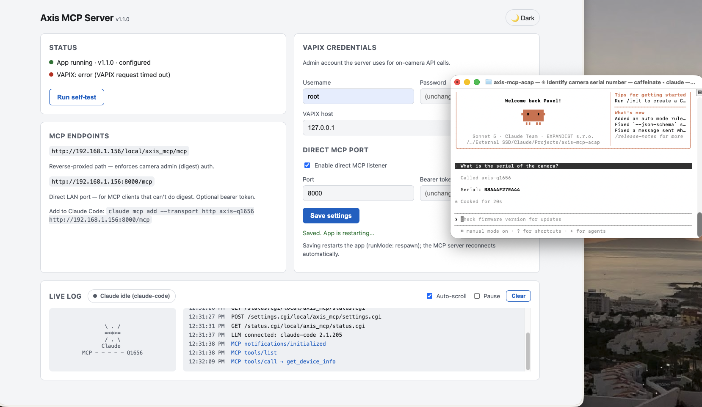
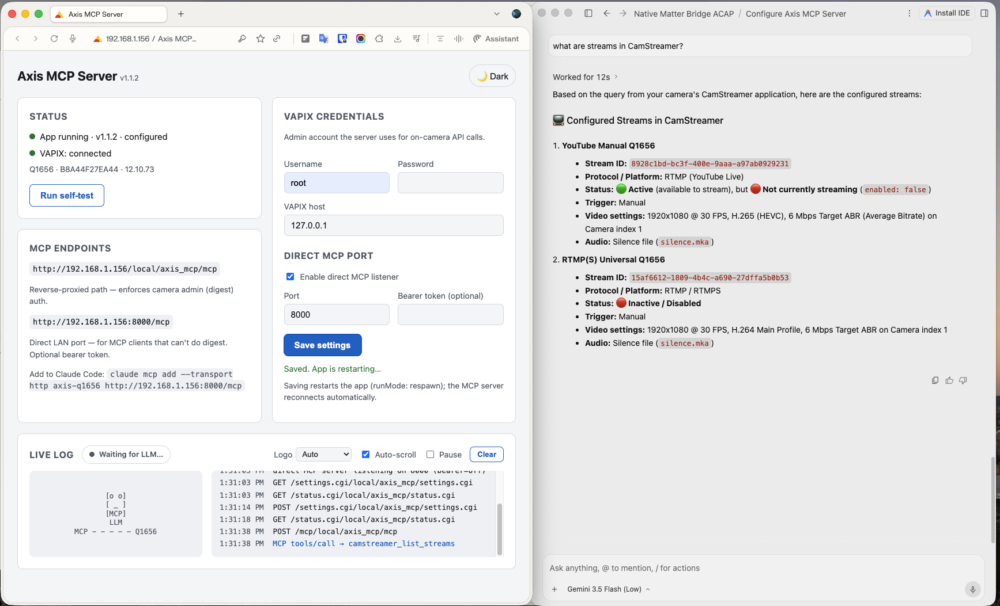
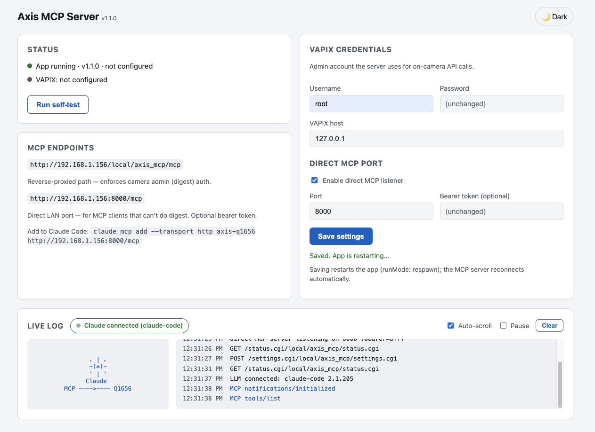
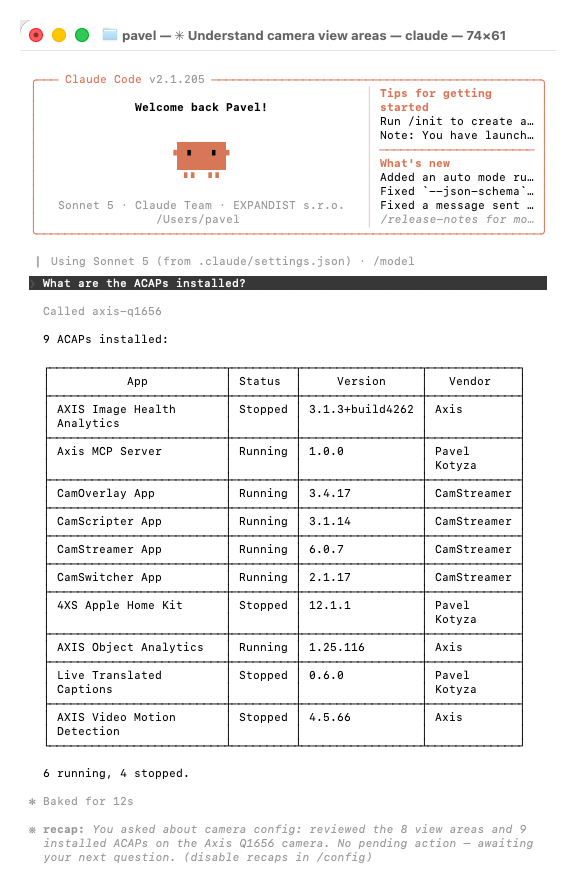
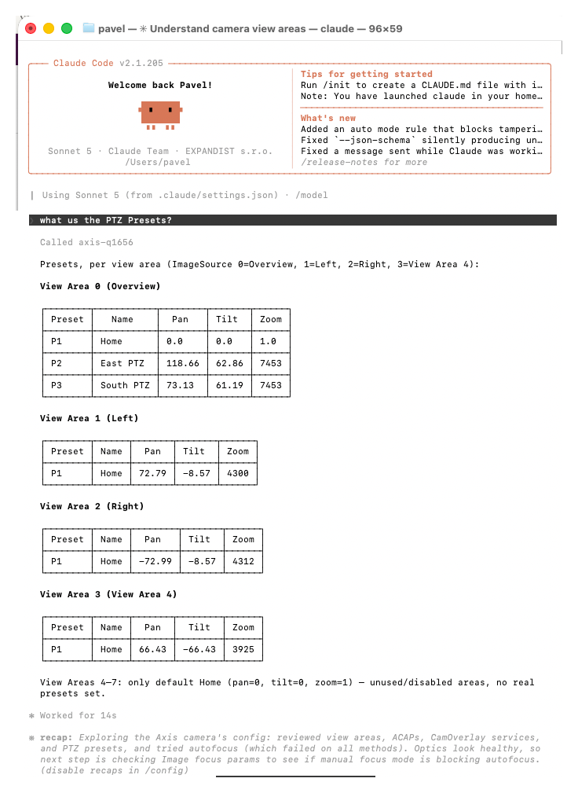
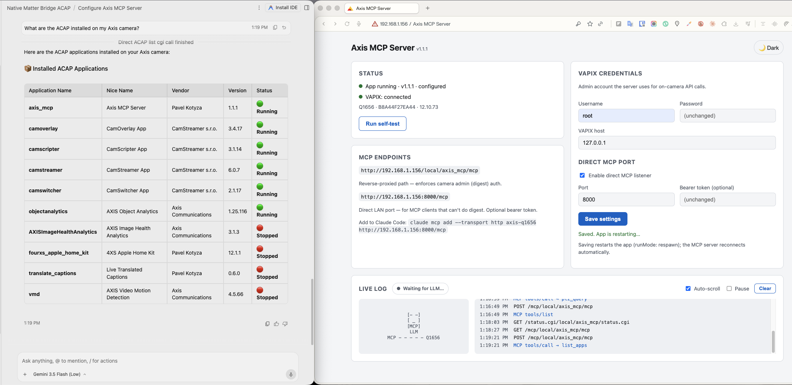
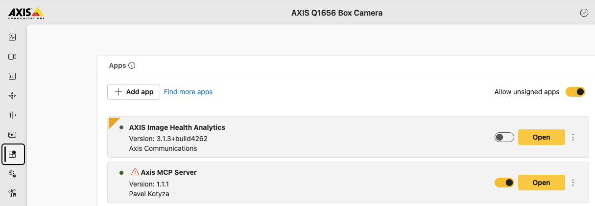

The first on-camera Model Context Protocol server for AXIS cameras. One .eap opens the camera to Claude, Gemini, ChatGPT and Perplexity — no cloud, no middleware. Zero hops. Zero cloud.

Claude, Gemini, ChatGPT and Perplexity talk to the device directly — the intelligence meets the camera on its own loopback.
A Node.js runtime bundled into a native AXIS OS 11/12 ACAP. No gateway, no relay — the MCP server runs on the device.
Standards-compliant MCP over stateless Streamable HTTP — exactly what modern agents expect.
Claude, Gemini / Antigravity, ChatGPT Developer Mode, Perplexity, and any custom agent. Open protocol, open future.
Device health, snapshots, imaging, optics, autofocus, events, analytics and app control — as clean structured tools.
Drive CamStreamer, CamSwitcher and CamOverlay. “Switch to the gate view and go live” — and it happens.
Behind the camera's admin auth, with an optional bearer-guarded direct port. Parameter writes are allow-listed.
A curated toolset that returns data an LLM can reason over — not raw CGI dumps.
get_device_info · get_system_status · get_time
take_snapshot · get/set_image_settings · set_zoom_focus · get_optics · autofocus
list_event_declarations · get_analytics_status
list_apps · control_app · get_params · set_param
camstreamer_list_streams · stream_status · control_stream
camswitcher_list/switch/queue · camoverlay_services · update_graphic_text

The live console recognizes which AI is connected — and greets it in living ASCII.
12:31:03 primary HTTP server listening on 32554 12:31:38 POST /mcp 12:31:38 MCP initialize 12:31:38 MCP tools/list 12:32:09 MCP tools/call → take_snapshot 12:32:57 MCP tools/call → camswitcher_switch_playlist 12:33:07 MCP tools/call → autofocus

No scripts, no SDK glue — just natural language over MCP, against a live AXIS Q1656.



The agent speaks MCP over Streamable HTTP to the camera itself. VAPIX calls never leave the device.
Nothing leaves the LAN unless you deliberately expose it. The intelligence runs where the pixels are.
Build with Docker on your machine, install the .eap, point your agent at the camera.
ARTPEC-8 / aarch64. Docker is used only to build.
cd axis-mcp-acap
sh build.sh arm64 # → Axis_MCP_Server_1_2_0_aarch64.eapSystem → Apps → enable Allow unsigned apps → upload the .eap → Start. Then enter VAPIX admin credentials on the settings page.
Use the direct LAN port — and tag the client so the console shows its logo.
claude mcp add --transport http axis-q1656 \
http://<camera-ip>:8000/mcp
# tag a client for its own logo
http://<camera-ip>:8000/mcp?client=antigravity
Local clients reach the camera directly; cloud clients connect via an HTTPS tunnel.
Install the .eap. Point your agent at the camera. Watch it come alive.